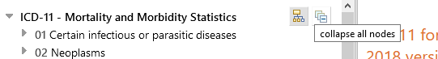

ICD-11 Browser
ICD-11 Browser is a web site that allows users see the content of the ICD 11th Revision
This User Guide provides details on the usage of the site. You may navigate the user guide by using the links on the left or go back to the ICD-11 Browsing by using the menus. Below are several important information that will help you use the site more efficiently.
Help Icon
The ICD11 Browser application includes context sensitive help which you may access by clicking on the  icon. This icon is located
in several different locations in the application and when clicked gives you information in a pop-up window. These pop-up windows
can be closed by clicking on the X at the top right side of the window.
icon. This icon is located
in several different locations in the application and when clicked gives you information in a pop-up window. These pop-up windows
can be closed by clicking on the X at the top right side of the window.
Tooltips
Another useful feature is the tooltip functionality. When you move your mouse on any icon or a button for a second or so, the system will give you more information on the functionality of the icon.
